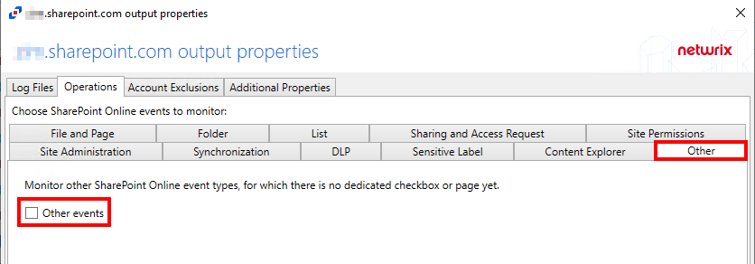

Symptom
When running SPAC System Scans for SharePoint Online in Netwrix Enterprise Auditor (NEA), the system generates the following error message:
[8] Unknown item type
Cause
This issue occurs because these are newer event types being collected by Netwrix Activity Monitor for which NEA do not have mappings.
Resolutions
To address this issue, it is recommended to do one of the following:
-
Ignore the warnings, as they do not inhibit data collection.
-
Upgrade to the latest version of NEA, which should include all SharePoint Online activity types known up until the most recent release date.
NOTE: If you are on the latest released version of NEA and are still encountering this issue, please submit an escalation to have new event types added to a future release.
-
Disable the collection of Other event types in Netwrix Activity Monitor:
-
Open Netwrix Activity Monitor and navigate to the SharePoint Online file output in the Monitored Hosts tab.
-
On the Other tab, uncheck the Other events option:

-